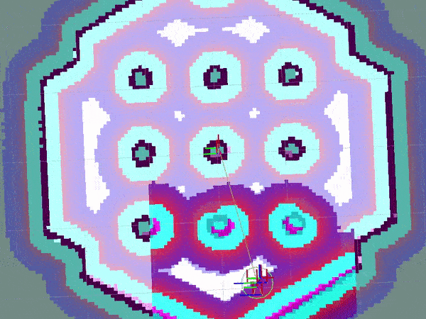

Writing a New Controller Plugin¶
{kind=link}
Overview¶
This tutorial shows how to create your own controller plugin.
In this tutorial, we will be implementing the pure pursuit path tracking algorithm based on this paper. It is recommended you go through it.
Note: This tutorial is based on a previously existing simplifed version of the Regulated Pure Pursuit controller now in the Nav2 stack. You can find the source code matching this tutorial here.
Requirements¶
ROS2 (binary or build-from-source)
Nav2 (Including dependencies)
Gazebo
Turtlebot3
Tutorial Steps¶
1- Create a new Controller Plugin¶
We will be implementing the pure pursuit controller. The annotated code in this tutorial can be found in navigation_tutorials repository
as the nav2_pure_pursuit_controller. This package can be considered as a reference for writing your own controller plugin.
Our example plugin class nav2_pure_pursuit_controller::PurePursuitController inherits from the base class nav2_core::Controller. The base class provides a
set of virtual methods to implement a controller plugin. These methods are called at runtime by the controller server to compute velocity commands.
The list of methods, and their descriptions, and necessity are presented in the table below:
Virtual method |
Method description |
Requires override? |
configure() |
Method is called when controller server enters on_configure state. Ideally this method should perform declarations of ROS parameters and initialization of controller’s member variables. This method takes 4 input params: weak pointer to parent node, controller name, tf buffer pointer and shared pointer to costmap. |
Yes |
activate() |
Method is called when controller server enters on_activate state. Ideally this method should implement operations which are neccessary before controller goes to an active state. |
Yes |
deactivate() |
Method is called when controller server enters on_deactivate state. Ideally this method should implement operations which are neccessary before controller goes to an inactive state. |
Yes |
cleanup() |
Method is called when controller server goes to on_cleanup state. Ideally this method should clean up resources which are created for the controller. |
Yes |
setPlan() |
Method is called when the global plan is updated. Ideally this method should perform operations that transform the global plan and stores it. |
Yes |
computeVelocityCommands() |
Method is called when a new velocity command is demanded by the controller server in-order for the robot to follow the global path. This method returns a geometry_msgs::msg::TwistStamped which represents the velocity command for the robot to drive. This method passes 2 parameters: reference to the current robot pose and its current velocity. |
Yes |
In this tutorial, we will have used the methods PurePursuitController::configure, PurePursuitController::setPlan and
PurePursuitController::computeVelocityCommands.
In controllers, configure() method must set member variables from ROS parameters and perform any initialization required,
void PurePursuitController::configure(
const rclcpp_lifecycle::LifecycleNode::WeakPtr & parent,
std::string name, const std::shared_ptr<tf2_ros::Buffer> & tf,
const std::shared_ptr<nav2_costmap_2d::Costmap2DROS> & costmap_ros)
{
node_ = parent;
auto node = node_.lock();
costmap_ros_ = costmap_ros;
tf_ = tf;
plugin_name_ = name;
logger_ = node->get_logger();
clock_ = node->get_clock();
declare_parameter_if_not_declared(
node, plugin_name_ + ".desired_linear_vel", rclcpp::ParameterValue(
0.2));
declare_parameter_if_not_declared(
node, plugin_name_ + ".lookahead_dist",
rclcpp::ParameterValue(0.4));
declare_parameter_if_not_declared(
node, plugin_name_ + ".max_angular_vel", rclcpp::ParameterValue(
1.0));
declare_parameter_if_not_declared(
node, plugin_name_ + ".transform_tolerance", rclcpp::ParameterValue(
0.1));
node->get_parameter(plugin_name_ + ".desired_linear_vel", desired_linear_vel_);
node->get_parameter(plugin_name_ + ".lookahead_dist", lookahead_dist_);
node->get_parameter(plugin_name_ + ".max_angular_vel", max_angular_vel_);
double transform_tolerance;
node->get_parameter(plugin_name_ + ".transform_tolerance", transform_tolerance);
transform_tolerance_ = rclcpp::Duration::from_seconds(transform_tolerance);
}
Here, plugin_name_ + ".desired_linear_vel" is fetching the ROS parameters desired_linear_vel which is specific to our controller.
Nav2 allows loading of multiple plugins, and to keep things organized, each plugin is mapped to some ID/name.
Now, if we want to retrieve the parameters for that specific plugin, we use <mapped_name_of_plugin>.<name_of_parameter> as done in the above snippet.
For example, our example controller is mapped to the name FollowPath and to retrieve the desired_linear_vel parameter, which is specific to “FollowPath”,
we used FollowPath.desired_linear_vel. In other words, FollowPath is used as a namespace for plugin-specific parameters.
We will see more on this when we discuss the parameters file (or params file).
The passed in arguments are stored in member variables so that they can be used at a later stage if needed.
In setPlan() method, we receive the updated global path for the robot to follow. In our example, we transform the received global path into
the frame of the robot and then store this transformed global path for later use.
void PurePursuitController::setPlan(const nav_msgs::msg::Path & path)
{
// Transform global path into the robot's frame
global_plan_ = transformGlobalPlan(path);
}
The computation for the desired velocity happens in the computeVelocityCommands() method. It is used to calculate the desired velocity command given the
current velocity and pose. In the case of pure pursuit, the algorithm computes velocity commands such that the robot tries to follow the global path as closely as possible.
This algorithm assumes a constant linear velocity and computes the angular velocity based on the curvature of the global path.
geometry_msgs::msg::TwistStamped PurePursuitController::computeVelocityCommands(
const geometry_msgs::msg::PoseStamped & pose,
const geometry_msgs::msg::Twist & velocity)
{
// Find the first pose which is at a distance greater than the specified lookahed distance
auto goal_pose = std::find_if(
global_plan_.poses.begin(), global_plan_.poses.end(),
[&](const auto & global_plan_pose) {
return hypot(
global_plan_pose.pose.position.x,
global_plan_pose.pose.position.y) >= lookahead_dist_;
})->pose;
double linear_vel, angular_vel;
// If the goal pose is in front of the robot then compute the velocity using the pure pursuit algorithm
// else rotate with the max angular velocity until the goal pose is in front of the robot
if (goal_pose.position.x > 0) {
auto curvature = 2.0 * goal_pose.position.y /
(goal_pose.position.x * goal_pose.position.x + goal_pose.position.y * goal_pose.position.y);
linear_vel = desired_linear_vel_;
angular_vel = desired_linear_vel_ * curvature;
} else {
linear_vel = 0.0;
angular_vel = max_angular_vel_;
}
// Create and publish a TwistStamped message with the desired velocity
geometry_msgs::msg::TwistStamped cmd_vel;
cmd_vel.header.frame_id = pose.header.frame_id;
cmd_vel.header.stamp = clock_->now();
cmd_vel.twist.linear.x = linear_vel;
cmd_vel.twist.angular.z = max(
-1.0 * abs(max_angular_vel_), min(
angular_vel, abs(
max_angular_vel_)));
return cmd_vel;
}
The remaining methods are not used, but it’s mandatory to override them. As per the rules, we did override all but left them empty.
2- Exporting the controller plugin¶
Now that we have created our custom controller, we need to export our controller plugin so that it would be visible to the controller server.
Plugins are loaded at runtime, and if they are not visible, then our controller server won’t be able to load it. In ROS2, exporting and loading
plugins is handled by pluginlib.
Coming to our tutorial, class nav2_pure_pursuit_controller::PurePursuitController is loaded dynamically as nav2_core::Controller which is our base class.
To export the controller, we need to provide two lines
#include "pluginlib/class_list_macros.hpp"
PLUGINLIB_EXPORT_CLASS(nav2_pure_pursuit_controller::PurePursuitController, nav2_core::Controller)
Note that it requires pluginlib to export out the plugin’s class. Pluginlib would provide as macro PLUGINLIB_EXPORT_CLASS, which does all the work of exporting.
It is good practice to place these lines at the end of the file, but technically, you can also write at the top.
The next step would be to create the plugin’s description file in the root directory of the package. For example,
pure_pursuit_controller_plugin.xmlfile in our tutorial package. This file contains the following information
library path: Plugin’s library name and it’s location.class name: Name of the class.class type: Type of class.base class: Name of the base class.description: Description of the plugin.
<library path="nav2_pure_pursuit_controller">
<class type="nav2_pure_pursuit_controller::PurePursuitController" base_class_type="nav2_core::Controller">
<description>
This is pure pursuit controller
</description>
</class>
</library>
Next step would be to export plugin using
CMakeLists.txtby using CMake functionpluginlib_export_plugin_description_file(). This function installs the plugin description file tosharedirectory and sets ament indexes to make it discoverable.
pluginlib_export_plugin_description_file(nav2_core pure_pursuit_controller_plugin.xml)
The plugin description file should also be added to
package.xml
<export>
<build_type>ament_cmake</build_type>
<nav2_core plugin="${prefix}/pure_pursuit_controller_plugin.xml" />
</export>
Compile, and it should be registered. Next, we’ll use this plugin.
3- Pass the plugin name through the params file¶
To enable the plugin, we need to modify the nav2_params.yaml file as below
controller_server:
ros__parameters:
controller_plugins: ["FollowPath"]
FollowPath:
plugin: "nav2_pure_pursuit_controller::PurePursuitController"
debug_trajectory_details: True
desired_linear_vel: 0.2
lookahead_dist: 0.4
max_angular_vel: 1.0
transform_tolerance: 1.0
In the above snippet, you can observe the mapping of our nav2_pure_pursuit_controller/PurePursuitController controller to its id FollowPath.
To pass plugin-specific parameters we have used <plugin_id>.<plugin_specific_parameter>.
4- Run Pure Pursuit Controller plugin¶
Run Turtlebot3 simulation with enabled Nav2. Detailed instructions on how to make it run are written at Getting Started. Below is a shortcut command for that:
$ ros2 launch nav2_bringup tb3_simulation_launch.py params_file:=/path/to/your_params_file.yaml
Then goto RViz and click on the “2D Pose Estimate” button at the top and point the location on the map as it was described in Getting Started. The robot will localize on the map and then click on the “Nav2 goal” and click on the pose where you want your robot to navigate to. After that controller will make the robot follow the global path.